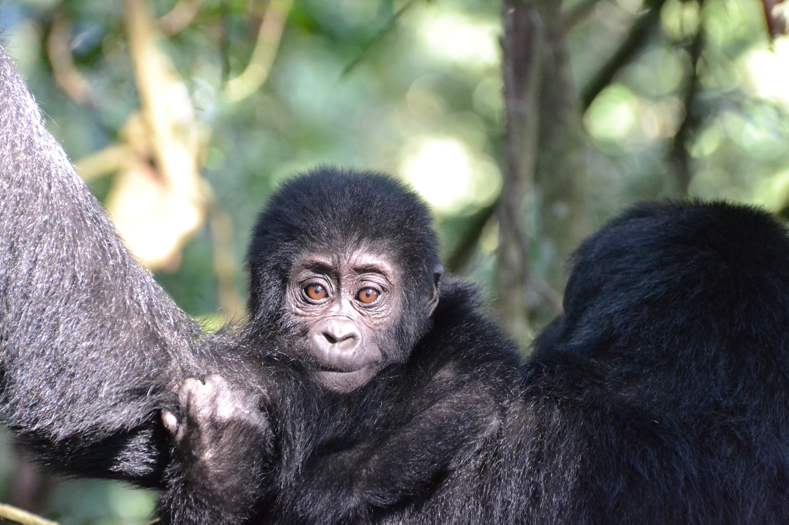

EvoCoex Lab
Evolution and Coexistence Lab
Raquel F. P. Costa, PhD
Program-Specific Assistant Professor
Graduate School of Education and Human Development
Nagoya University
Research Aims
Our lab investigates the dynamics of close human–animal interactions, from wild ecotourism settings to controlled zoo environments. Building on fieldwork in Uganda that highlighted risks of aggression and disease transmission, we now focus on why people seek close contact with animals, using captive contexts to investigate how interaction quality (not just frequency) shapes human–animal connections. What these encounters mean for visitor learning, animal welfare, and conservation engagement? What does it mean for (the welfare of) wild and captive animals? We also explore the physiological and psychological effects of close encounters on both humans.
Research Interests
- Human-Animal Interactions & Communication
- Primate Behavior, Cognition, and Welfare
- Conservation, Ecotourism, and Human-Wildlife Coexistence
- Evolutionary Roots of Human Sociality and Language
- Visitor Psychology and Public Education

About the Lab
Our team includes collaborators, students, research assistants, in Japan, Portugal, USA, France and Brazil.
--Communication via Gesture & Facial Expression: analyze the structure, diversity, and intentionality of visual signals in apes and humans during naturalistic interactions.
--Cultural Modulation: Comparing Japanese and Western human participants, to test cultural norms in nonverbal communication.
--Psycho and Physiological measurements of human's wellbeing in close contact with animals.
#
#
Our Team
Principal Investigator
Raquel F. P. Costa, PhD
Graduate School of Education and Human Development, Nagoya University
Collaborators
comingp>
Students & Research Assistants
Graduate School of Education and Human Development, Nagoya University
Graduate School of Education and Human Development, Nagoya University
Department of Education, Chubu Gakuin University
Selected Papers
Costa, R., Xu, S., Brandão, A., & Hayashi, M. (2025). Reconnection with nature through empathy: rewiring people and animals by assessing zoo visitors' connection to species and the need for their conservation. Frontiers in Psychology, 16, 1517430.p>
Correia-Caeiro, C., Costa, R., Hayashi, M., Burrows, A., Pater, J., Miyabe-Nishiwaki, T., ... & Liebal, K. (2025). GorillaFACS: The Facial Action Coding System for the Gorilla spp. PloS one, 20(1), e0308790.p>
Costa, R., Brandao, A. & Hayashi, M. (2024). The behavioral sequences of mountain gorillas under tourism pressure – insights for tourism sustainability. Primates Conservation, IUCN Special Group, 37 (37): 121-133.p>
Costa, R., Romano, V., Pereira, A. S., Hart, J. D., MacIntosh, A., & Hayashi, M. (2023). Mountain gorillas benefit from social distancing too: Close proximity from tourists affects gorillas' sociality. Conservation Science and Practice, 5(1), e12859.p>
Costa, R., Tomonaga, M., Huffman, M. A., Takeshita, R., Bercovitch, F., Kalema‐Zikusoka, G., & Hayashi, M. (2023) The impact of tourist visits on mountain gorilla behavior in Uganda. Journal of Ecotourism, 1-19.p>
Costa, R., Tomonaga, M., Otsuka, R., Huffman, M. A., Bercovitch, F., Kalema-Zikusoka, G., & Hayashi, M. (2021) The Dispersal Dilemma Among Female Mountain Gorillas: Risk Infanticide or Gain Protection. African Journal of Ecology, 59:273–276.p>
Hart., E. N, Costa, R. & Takeshita, R. S. C., (2023). Behavioral and Physiological Responses of Zoo-housed Northern White-cheeked Gibbons (Nomascus leucogenys) During Acclimation to a New Zoo Habitat. Animal Keepers’ Forum: The Journal of the American Association of Zoo Keepers, Inc. Vol 50(7).p>
Costa, R., Hayashi, M., Huffman, M. A., Kalema-Zikusoka, G., & Tomonaga, M. (2019). Water games by mountain gorillas: implications for behavioral development and flexibility—a case report. Primates, 60(6), 493-498.p>
Brandão, A., Costa, R., Rodrigues, E., & Vicente, L. (2019). Using behaviour observations to study personality in a group of capuchin monkeys (Cebus apella) in captivity. Behaviour, 156(3-4), 203-243.p>
Costa, R., Sousa, C., & Llorente, M. (2018). Assessment of environmental enrichment for different primate species under low budget: A case study. Journal of Applied Animal Welfare Science, 1-15.p>
Hanya, G., Naito, S., Namioka, E., Ueda, Y., Sato, Y., Pastrana, J. A., He, T., Yan, X., Saito, M., Costa, R., Allanic, M., Honda, T., Kurihara, Y., Yumoto, T. & Hayakawa, T. (2017). Morphometric and genetic determination of age class and sex for fecal pellets of sika deer (Cervus nippon). Mammal Study, 42(4), 239-246p>
Costa, R. (2014). Revisão sistemática: Uma ponte entre a aprendizagem social e cultura em primatas não humanos. [Systematic Review: A bridge between social learning and culture in non-human primates]. Cadernos do Geehv, 3(1): 38-52 (in Portuguese).p>
Sci comm events!
(coming)p>
Contact
Email: pereira.costa.raquel.filomena.z4@f.mail.nagoya-u.ac.jp
Nagoya University Institute for Advanced Research
Graduate School of Education and Human Development
Furo-cho, Chikusa-ku, Nagoya, AICHI 464-8601 Japan
Uni page: https://www2.educa.nagoya-u.ac.jp/staff/pereira-costa-raquel-filomena/
T-GEx page: https://www.t-gex.nagoya-u.ac.jp/member/3984-2.html